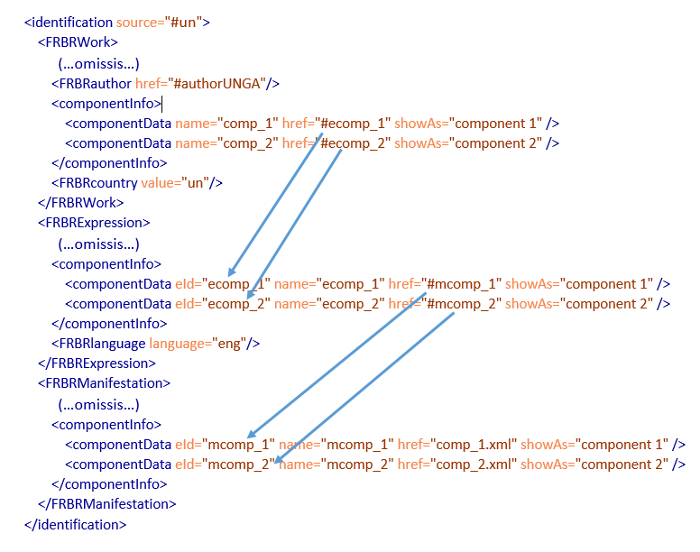
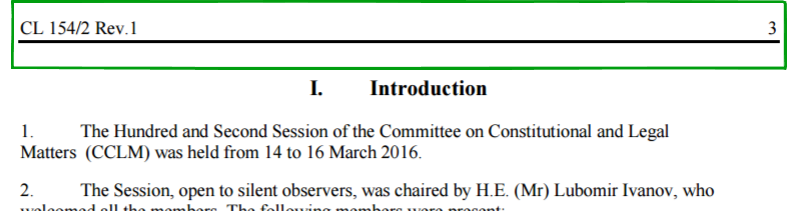

AKN4UN Metadata
Metadata is composed of information that is not in the original visible content of the document, but has been added to improve the comprehension and classification of the content in the document. AKN provides the <meta> block to contain metadata for the document. There are nine different container elements within the <meta> block, each describing a different aspect of metadata:
Table - Metadata Schema
<identification> (required) | This metadata block captures all relevant facts about documents, dates and authors. It also includes information about possible translations of a document and properties such as the prescriptiveness of the document and the authoritativeness. |
<publication> (required) | This metadata element captures information concerning the publication process of a document. |
<classification> | This metadata block is dedicated to assign keywords to the document based on the topic addressed in the legal content. |
<lifecycle> | This metadata block lists all the events which have changed the document over time through a formal process of amendments. i.e. events of the document itself. |
<workflow> | This metadata block list the events that are involved with the workflow process of documents, i.e. the sequence of steps affecting a document. A workflow step is different from a <lifecycle> event, in that it may imply no change to the content of a document. But most events of <lifecycle> are also <workflow> events. |
<analysis> | This metadata block may contain various elements to describe and annotate the provisions in the document that qualify the content semantically – like amendments, votes, judicial, etc. specific metadata annotations. |
<temporalData> | This metadata block contains all the groups that have temporal information about any aspect of the document, e.g. enter into force date, efficacy period, et. |
<references> (required) | This block metadata models all the references with other documents or with ontology classes and it is used to record resources connected with a document as well as of all individuals, organizations, and concepts. |
<notes> | This metadata block records the editorial notes (non-authorial notes) made by institutions (libraries, editors, etc.) who wish to include in the text subjective or doctrinal interpretations |
<presentation> | This metadata block contains specifications to support the visual rendering of the document (e.g. specifications on the paper format, odd and even footers and headers, etc.) to preserve the format over time. |
<proprietary> | This metadata block allows to add any other custom tags useful for managing legacy systems or other local additional metadata that may be required. |
All these elements found at the top level of the <meta> container:
must use the @source attribute to identify the source that provided the metadata. The @source may be a reference to a person, an organization, a process, or even an application.
may be repeated, as necessary, except <identification> and <publication>, which may occur, at most once. This repetition is permitted because metadata may come from more than one source, and you may have a separate container element for each source.
<identification>
The <identification> metadata block captures all relevant facts about documents, dates and authors. It also includes information about possible translations of a document and properties such as the prescriptiveness and the authoritativeness of the document.
The “identification” of documents, as we have seen, is modelled on the FRBR levels (see Table below), and each of these levels has a corresponding element:
Table: How FRBR Elements relate to documents
FRBR Container Element | Legal Document |
The Work <FRBRWork> | “Treaty on Exploitation of Space” approved in 2000 |
The Expression <FRBRExpression> | “Treaty on Exploitation of Space" 2000 in English, or “Treaty on Exploitation of Space" as amended in 2006 in Spanish; |
The Manifestation <FRBRManifestation> | Treaty_Space_2006.pdf Treaty_ Space_2009.xml |
The Item <FRBRItem> | Treaty_Space_2006.pdf on your PC Treaty_ Space_2009.xml on the library server |
Only the work, expression and manifestation elements are required, in the order shown above. In AKN, we are not really concerned with <FRBRItem>.
In AKN the FRBR levels are containers, which further contain elements to describe individual aspects of identification information found in the work. For example: “Treaty on Exploitation of Space” approved in 2000 in English has different identification parts as shown in the Table below, so the elements within the FRBR container for each level describe an identification metadata component.
Table: FRBR & Metadata
Part | Identification Metadata Component |
Treaty on | Document Type |
Exploitation of Space | Document Title |
Approved in | Document Status |
2000 | Document Date |
In English | Document Language |
The full list of elements supported within the FRBR level containers is summarized below:
Table 15 FRBR elements and their usage
* Items marked with an asterisk are allowed multiple times. | work | expression | manifestation | item |
<FRBRthis> To refer to this specific document part at each of the four levels | required | required | required | required |
<FRBRuri> To refer to this specific document at each of the four levels | required | required | required | required |
<FRBRalias> * To associate alternate names or URLs to this document | optional | optional | optional | optional |
<FRBRdate> * Dates of this document as per FRBR level | required | required | required | required |
<FRBRauthor>28 For authors of this document | required | required | required | required |
<FRBRcountry> To associate a country (or jurisdiction) with this document | required | |||
<FRBRsubtype> To indicate the subtype of this document. See allowed values in section “3.3 Mapping AKN4UN Document Classes” | optional | - | - | - |
<FRBRnumber> To associate the official number of the document with this document | optional | - | - | - |
<FRBRname> To associate a name with this document | optional | - | - | - |
<FRBRprescriptive> To declare whether or not this document contains prescriptive text | optional | - | - | - |
<FRBRauthoritative> To declare whether or not this text is authoritative | optional | optional | - | - |
<FRBRmasterExpression> To declare that this expression of the document is the master | - | optional | - | - |
<FRBRversionNumber> To associate a version number with this document | - | optional | - | - |
<FRBRlanguage> To declare the language of this document | - | required | - | - |
<FRBRtranslation> To state that this document is a translation from another text | - | optional | - | - |
<FRBRportion>29 To associate a document portion with its origin | - | - | optional | - |
<FRBRformat> To associate an Internet Media Type specification to the document | - | - | optional | - |
We examine some of these in a bit more detail in the following section.
The following table list the allowed attributes.
Table: FRBR element attributes
<FRBRalias> <FRBRauthoritative> <FRBRcountry> <FRBRformat> <FRBRmasterExpression> <FRBRnumber> <FRBRprescriptive> <FRBRsubtype> <FRBRthis> <FRBRuri> <FRBRversionNumber> | @value : use to express a general value with the element. @refersTo (optional) : use to connect this element to an item in the ontology. @showAs (optional) : use to provide a textual way to describe this element. @shortForm (optional) : use to provide an abbreviated form of the @showAs value. |
<FRBRdate> | @date : use to associate a date with the document using the XML Schema syntax of YYYY-MM-DD or, when more precision is required YYYY-MM-DDThh:mm:ss(zzzz). @name : use to give the date a name to be known as (i.e. enacted). |
<FRBRauthor> | @href : usually contains an id reference (i.e. #ref) to a person or organization defined in the ontology. @as (optional) : use to specify the role of the author (i.e. sponsor, drafter, editor) as an id reference to a role defined in the ontology. |
<FRBRlanguage> | @language : use to specify the language of this document using a code from RFC 4646. |
<FRBRtranslation> | @href : use to provide a reference to the source document that this translation came from. @fromLanguage : use to specify the language translating from, selecting a code from RFC 4646. @by : use to specify the translator using an id reference (i.e. #ref) to a person or organization defined in the ontology. @authoritative (optional) : use to specify, as a Boolean true or false, if this translation is authoritative. @pivot (optional) : use to specify an intermediate human language through which the translation was made. The value is a code from RFC 4646 |
<FRBRportion> | @from : use to specify an id reference to the portion of the full document that has been extracted. If the portion contains a range of elements, then @from specified the first id reference. @upTo (optional) : use to specify, when the portion contains a range of element, the last id reference. @refersTo (optional) : use to connect this portion to an item in the ontology. @showAs (optional) : use to provide a textual way to describe this portion. @shortForm (optional) : use to provide an abbreviated form of the @showAs value. |
<FRBRcountry>
This is allowed only at the Work level (<FRBRWork>). For AKN4UN documents this is always set as “un”. It is the ISO 3166/MA code for the United Nations (always in lower case). This also corresponds to the country / jurisdiction part of the IRI of the document (see <<<naming convention>>). This is part of the Work IRI.
<FRBRauthor>
In AKN4UN this corresponds to the name of the Organization authoring this document. This may be also a combination of Organization, Body and Sub-Body separate by hyphen. However, the <FRBRauthor> element takes an IRI not a literal string value. This IRI value is a reference to an ontology Concept or Organization representing the body authoring the document. For example:
If the General Committee of the General Assembly authored the document, it needs a non-document class <TLCOrganization> or <TLCConcept> definition:
<FRBRWork>
….
<FRBRauthor href="#orgGC"/>
….
</FRBRWork>
<references source="#un">
<TLCOrganization eId="orgGC" href="/ontology/akn/un/ un-ga-gc" showAs="General Committee"/>
</references>
The end point of the TLCOrganization identifier (“un-ga-gc”) is part of the Work IRI.
Note that <FRBRauthor> is part of the <FRBRExpression> and <FRBRManifestation>, and the intention is that the Expression may have a different author (say a translation department), and the XML manifestation may have a different author too (e.g. an XML drafter). Practically in most cases you would have the same author across Work, Expression and Manifestation.
<FRBRdate>
This is typically the date of creation of the document for a formally approved / published document, and is found at all three Work, Expression and Manifestation levels. If only the Year is available for the date, then the month and day need to be set as January 1. If only the Month and Year are available, then the day needs to be set as the 1st. The date needs to be in YYYY-MM-DD in ISO 8601 format. This is part of the IRI of the document.
If required, the date may be integrated with a time using values for the XSD:dateTime (ISO 8601) datatype format: Thh:mm:ss±hh:mm. The difference between the local time and Coordinated Universal Time (UTC) is specified using the sign + or - followed by the difference from UTC represented as hh:mm (note: the minutes part is required). The date and time format is in ISO 8601 format30.
For documents which are not formally published, the presentation date (i.e. the date that appears on the document) is appropriate as a <FRBRdate>.
If there is no date for the version, then the version number if one exists, or any other disambiguating string as decided upon by the implementor that helps identifying the specific version of the document, in this case the value MUST correspond to the content of element <FRBRversionNumber>.
<FRBRnumber>
This the official number / identifier of the document as used in the organization, and is found only at the Work level IRI (since assigning a new number implies that it is a different document entirely), and is part of the IRI of the document.
If a document does not have a number31, because it never has a number, then a unique number in a format as decided by the implementor should be set for the document when it is created and used in <FRBRnumber>.
Occasionally, document identifiers in UN documents have characters which are invalid in an IRI.
For example:
CL 154/1 is the document number of a FAO council Agenda
70/34 is the document number of a GA Resolution
Each of these identifiers have characters which do not fit well within the AKN IRI structure, namely the “/” character and the literal space “ “. While “/” is a valid IRI character, each “/” segment of the AKN IRI has specific meaning, the use the “/” in the number segment will make it difficult to parse IRIs in a uniform way. Similarly with the literal space, it needs explicit encoding. For this reason, we replace certain characters in numbers in the IRI with substitute characters:
“/” is substituted with a dash (“-“)
“ “ empty space is substituted with an underscore (“_”)
So for Document Number CL 154/1, the FRBRNumber will look like:
<FRBRnumber value="CL_154-1" showAs="CL 154/1"/>
To prevent confusion in cases where a number has an explicit dash or an explicit underscore, the actual rendering of the number as used by the organization needs to be set in the @showAs attribute of <FRBRNumber> and via <docNumber> mark-up.
<FRBRlanguage>
This is applicable only at the Expression level, and specifies the language of the document. The language code is specified in ISO 639-2 Alpha 3 format32. For multilingual documents which have text in different languages within the same document, use “mul” (text with different languages) as the language code, and “und” (undetermined language) for when the language is not known. This is part of the IRI of the document.
<FRBRuri>
This is the full Work, Expression or Manifestation IRI to the whole document, depending on the particular level where it is used. If you are searching for documents by IRI, this will be the likely element that you will query for in the documents. <FRBRuri> refers to the whole document – all its parts and components.
For example, the following is a <FRBRuri> to the whole conference report document 2015 of FAO
<FRBRuri value="/akn/un/debateReport/report/fao-conference/2015-06-13/C_2015 "/>
<FRBRthis>
Documents are composed of logical components and attachments. The <FRBRthis> element is basically the <FRBRuri> value with the relative reference to the component attached to it. It is used in all the three FRBR levels. All AKN documents have a “main” part which is the main body of the document. So the <FRBRthis> to the main document will look like:
<FRBRthis value="/akn/un/debateReport/report/fao-conference/2015-06-13/C_2015/!main "/>
<FRBRsubtype>
This identifies the sub-Type of the document and is allowed only at the Work FRBR level. The primary type of the document is always an AKN document Type. <FRBRsubtype> value must be set to one of the prescribed values as indicated in the table in Section “3.3 Mapping of AKN4UN Document Classes to AKN Document Types”. This very same value is used as the subtype component of the document IRI. For example, a General Assembly decision is modelled using the “statement” AKN document type, and the subtype value is set by AKN4UN to “deliberation”. Space and special characters are not allowed to be set in this value. <FRBRsubtype> is part of the IRI identifier of the document.
<FRBRformat>
This is allowed at only the FRBR Manifestation level, and identifies the unique three or four letter extension signifying the data format of the Manifestation. In most cases, this will be just “xml”. This is part of the IRI Manifestation identifier of the document.
<FRBRversionNumber>
This is expected to be used for transitory versions of the document. The <FRBRdate> in <FRBRExpression> implies a formal date for the expression; however, there may be cases where the document is versioned without a formal date, for instance, when a document is being drafted and prior to publication there are multiple versions. For such scenarios, <FRBRversionNumber> may be used to set a numerical version number for the document. In such cases, <FRBRdate> in the expression may be set to “1900-01-01”, since it is mandatory.
<FRBRtranslation>
This is allowed only at the FRBR Expression level. This is set to indicate that the document is the result of a translation from another language. This will be used for UN documents which are translated into other languages. For example:
<FRBRlanguage language="fra"/>
<FRBRtranslation href="/akn/un/statement/deliberation/un-ga/2016-10-13/71-4/eng@"
fromLanguage="eng" by="#reportOffice"/>
The above states that the current French document is a translation, and it was originally in English. The translation was done by the Report office.
<FRBRmasterExpression>
This element is relevant only at the FRBR Expression level in certain special cases.
Master Expressions are related to identifiers, which have been discussed in detail in the Naming Convention section on Ids. In a nutshell, Master Expressions are relevant when both @eId and @wId identifiers have been used in the document.
At some point in a document’s lifecycle it is possible their sections get renumbered, rearranged or simply deleted, you have @wId identifiers on elements which are not the same as the corresponding @eId identifiers, as the @wId identifiers are unchanging unlike the @eId identifiers. So, effectively, the @wId identifiers relate to a structure of the document in the past. The version of the document at the point in time when this divergence occurs is called the master expression. Setting this allows tracking of the history of the change across different versions of a document.
The other scenario where FRBRmasterExpression may be relevant is in the case of translations. If the structure of the document is different across translations of the same version of the document, the FRBR masterExpression is used to record the version at which the divergence occurred.
<componentInfo>
Documents in AKN are made up of multiple logical components. The logical components exist in the <components> section of the document. However, prior to that, we need to identify the logical components in the context of the whole document, and that is done within the <componentInfo> element found at the FRBR Work, Expression and Manifestation levels. <componentInfo> needs to be used at every FRBR level defined in the document, and provides a relationship between components at different FRBR levels.
When used at the <FRBRWork> level, <componentInfo> contains a list of references to the logical component expressions level. When used at the <FRBRExpression> level it contains a list of references to the logical components at the manifestation <FRBRManifestation> level and to the physical files themselves when used within <FRBRManifestation>. This allows navigating from Work level components, discovering their corresponding Expression level components, and finally resolving to the actual component file at the Manifestation level. For example, if you have a resolution composed of two different components, you would express them in the document identification part, see the example below.

Figure: <componentInfo> usage
As you may see, the <componentData> of the Work refers to the <componentData> of the Expression, and that of the Expression to the Manifestation.
This also allows tracking work level components, which are relevant despite the Work being an abstract concept, simply because there may be cases where the Work originally had a particular logical component, which was letter removed in a later version which effectively means the Expression would cease to have the logical component. However, via the Work <componentInfo> block, the original existence of the removed logical component may still be expressed.
As seen in the figure above, <componentInfo> may have multiple <componentData> elements. Each <componentData> element describes a component, the syntax is as follows:
<componentData
eId="..."
href="{fileName}.xml"
name="{name}"
showAs="{visibleName}"/>
The @eId attribute is an identifier of the <componentData> element and must be unique within the document.
<preservation>
The <preservation> element provides a means for recording any preservation action which might have been taken to preserve this document. Akoma Ntoso does not prescribe what this element contains ― you are free to use it as you need, using elements from your own namespace.
A scenario where <preservation> could be used, is if you want to capture some representation of permissions regarding who may or cannot access the document. In such a case, the appropriate way to do this is to use elements from your proprietary namespace, and place them in the <preservation> element within <FRBRManifestation>.
<publication>
The <publication> metadata element captures information concerning the publication process. The name (@name attribute) of the source (e.g. Official Journal), the date of publication (@date attribute), the label for the presentation (@showAs – attribute), or the number (@number attribute) used by the source of the publication to identify it.
<publication name="Official Letter" date="2001-12-13" showAs="Official Letter" number="S-2001-1189"/>
<classification>
The <classification> metadata block is dedicated to assign keywords to the document based on the topic addressed in the content. There may be multiple <keyword> elements within the <classification> element. The content of the <keyword> is stored in the attribute @value and the @dictionary attribute stores the name of the vocabulary used. It is possible to use different vocabularies. For example:
<classification source="#unbis">
<keyword eId="keyword_1" value="Committee on Children Rights" showAs="Committee on Children's Rights"
dictionary="unbis"/>
<keyword eId="keyword_2" value="Human Rights Commission"
showAs="Human Rights Commission" dictionary="unbis"/>
</classification>
In the above example, the document has two keywords associated with it, which are names of Committees in the General Assembly. These keywords have been taken from the UNBIS thesaurus as specified in the @dictionary attribute.
The <term> element used inside of the text permits to connect the content with the keyword.
<term eId="term_1" refersTo="#keyword_2"> Human Rights Commission</term>
<lifecycle>
The <lifecycle> metadata block lists all the events which have changed the document over time.
The <lifecycle> element may contain multiple <eventRef> elements. Each <eventRef> has attributes to express information about the event that changed the document. The date of the event (@date attribute), the type of event (@type attribute – three types are provided by the schema, “amendment”, “repeal” and “generation”), the source of the event, which is a reference to metadata about the origin of the event.
Additionally, the reference to the Expression that triggered the particular event may be specified (via the @originatingExpression attribute).
The creation of the document is recorded as a <lifecycle> event, when it undergoes changes via amendments it is also captured as a lifecycle event. For example, a UN resolution is created out of a Working Paper, when the Working Paper formally becomes a Draft Resolution, it gets recorded as a <lifecycle> event as the Resolution document has been formally created. Subsequently if the resolution gets amended either by friendly or unfriendly amendments, every amendment is recorded as a <lifecycle> event since it changed the document.
<workflow>
The <workflow> block lists the events that are involved in the editorial workflow process of the documents as it goes through formal stages. For example, in resolutions there might be workflow steps like: Send to Committee, Ready for Vote, etc. Each of these steps are captured within the <workflow> element using the <step> element to record the outcomes. The @outcome attribute may be used to make a reference to a <TLCConcept> which provides the ontology concept of a “Send to Committee” or “Ready for Vote”. The @outcome attribute may also record the outcome of a vote.
The <workflow> step may appear to be like a <lifecycle> event described above, but they are fundamentally different. While <lifecycle> steps are about tracing the change history of the document and its content, the <workflow> steps are about tracing the formal process that the document has gone through. This means that a <workflow> step does not necessarily mean that there is a corresponding <lifecycle> event for the document.
For example, a Draft Resolution sometimes has to pass a committee stage, and only when it gets a certain number of votes, and co-sponsors does it move into a formal session. If the criteria to move into a formal session have been met, it could imply the Draft Resolution went through a workflow step without its content having changed. Each <workflow> <step> element has a @href attribute, this allows linking the <step> to an expression of the document. What this allows is linking specific steps to Expressions of the document that may have resulted because of the Workflow step (say if the Workflow step resulted in the document being changed and a new version of it created).
NOTE: it is also possible to add proprietary tags in your own namespace to include specifications to support any workflow management system that an organization may have or import/export the data. The workflow block lists the events that are involved within the legislative, judiciary or parliamentary process. A workflow step does not necessarily change the FRBR expression of a document.
<analysis>
The <analysis> metadata element may contain various elements to describe and annotate the provisions in the document that qualify the content semantically – like modifications, parliamentary or judicial specific metadata annotations.
Typically, this is used to model the language and semantic of the document as it relates to amending the document, but in a machine readable way. Because of this the section is typically used when a document has been edited (and not when it has been created), though the schema itself does not imply any such rule.
The <analysis> elements supports various other elements to describe the nature of the amendment the document is making to other documents, or the modifications the document itself contains.
<activeModifications> | Used for managing the modifications made by the current document to another document. Akoma Ntoso allows marking up provisions in the text that state a modification to another text; <activeModifications> contain metadata to support this. |
<passiveModifications> | Used for managing the inbound modifications into the current document. Akoma Ntoso allows marking up text in a document that is affected by modifications from another document. |
<restrictions> | Used for describing jurisdictional restrictions on parts of the document or legislation. E.g. if a part of the document only applies to a particular organization or region. |
<judicial> | Used for managing the judicial metadata, such as the qualification of the case-law references and the result of the decision. |
<parliamentary> | Used for managing the parliamentary metadata, such as the quorum information, the voting results, and the recall data. |
<mappings> | Used for managing the changes of IDs when a renumbering occurs and also whenever this expression is not the master expression of the document (e.g. linguistic variants with different numbering of the partitions imposed by the translation process). |
<otherReferences> | Used to specify a number of <otherRef> elements that are meant to specify implicit references associated with fragments of the document (identified through a source element). |
<otherAnalysis> | Any other proprietary metadata. |
Active Passive Modifications
Typically, documents like the FAO Basic Texts are modified via specific resolutions stating what needs to be changed in a specific Basic Text. The statement is made in terms of which section is being changed, and which content is being replaced with newer text.
In effect, the document making the change statement (document A) is applying a modification to an existing document (document B). Both document A and document B will have modificatory provisions; in the case of document A - it will contain <activeModifications> modificatory provisions (it is the document making the changes), and in the case of document B, it will contain <passiveModifications> (it is the document receiving the changes).
All the AKN document types support modificatory provisions. So to summarize:
<activeModifications> is meant to record information like source of the modification, destination of the modification, position where to apply the modification in the modified document, action of the modification, temporal parameters, conditions or limitations of the modification, other parameters for managing special modifications (e.g. renumbering).
<passiveModifications> is meant to record the modifications received from other legal documents or the changes applied to the current version of the document.
Both <activeModifications> and <passiveModifications> elements have the same structure and may contain the same types of elements, each describing a different modification either made by or contained within this document.
The following types of modifications are supported:
element | @type attribute values |
<textualMod> Used to change the text. This is the most common type of modification found in the documents. | insertion | join | renumbering | repeal | replacement | split | substitution |
<forceMod> Used to change a time period the language is in force. This is typically relevant only for normative documents. By “in force” we mean that the norm has been officially passed, but is not yet efficacious (see below <efficacyMod>). The norm may need to be formally applied before it may be effective. | endOfEnactment | entryIntoForce | postponementOfEntryIntoForce | prorogationOfForce | re-enactment | unconstitutionality | |
<efficacyMod> Used to change a time period the language is in effect. This is typically relevant only for normative documents. By efficacy we mean the time (between or from) when the norm is actually effective. | endOfEfficacy | entryIntoEfficacy | extraefficacy | inapplication | postponementOfEfficacy | prorogationOfEfficacy | retroactivity |
<legalSystemMod> Used to change the legal system behind the language. | application | conversion | coordination | deregulation | expiration | implementation | legislativeDelegation | ratification | reiteration | remaking | republication | staticReference |
<meaningMod> Used to change the meaning of the language. | variation | termModification | authenticInterpretation |
<scopeMod> Used to change the scope of applicability of the language. | exceptionOfScope | extensionOfScope |
In addition to the @type attribute, each modification may contain a number of other attributes:
@eId, @wId, @GUID, these are identifiers which may used to refer to this modification. Typically, only the @eId will be used.
@refersTo, used to reference an ontology.
@exclusion (Boolean true/false), used to indicate that human intervention should be taken rather than the automatic application (or consolidation) of this modification.
@incomplete (Boolean true/false), used to indicate that the analysis that produced the modification may not be complete.
@period, used to reference a <temporalGroup> which defines a time period that this modification applies to.
@status, this attribute is a set of values, ordinarily used to describe a discrepancy between the manifestation and the expression, which may also be used here to describe the status of the modification if the analysis may not be correct or current.
In addition, there are several elements that each modification uses to describe the modification:
<source>, used to provide a reference to the provision that expresses the modification.
<destination>, used to provide a reference to the provision that is affected by the modification.
<old> (optional) use to provide a reference to an element containing the text quoted33 as it was before it was changed. This element is only defined for textual modifications.
<new> (optional), used to provide a reference to an element containing the text quoted as it is to become. This element is only defined for textual modifications.
<previous> (optional), used to provide a reference to a provision in the prior expression of the document that is affected by a renumbering. This element is only defined for textual modifications.
<textualMod>
Below is an example of <textualMod> usage within <activeModifications> :
<analysis source="#UN">
<activeModifications>
(..omissis…)
<textualMod type="repeal">
<source href="#xxx"/>
<destination
href="/akn/un/act/GRO/fao/1945-01-01/!main#title_A__rule_XII__para_10__list_1__item_a__del_1"
/>
</textualMod>
(…omissis…)
</activeModifications>
</analysis>
In the content of the document:
<paragraph eId="mod_1__qtdS_1__rule_XII__para_10">
<num>10. </num>
<list eId=" mod_1__qtdS_1__XII__para_10__list_1">
<point eId="mod_1__qtdS_1__rule_XII__para_10__list_1__item_a">
<num>(a) </num>
<content>
<p>The appointment of <del
eId="mod_1__qtdS_1__rule_XII__para_10__list_1__item_a__del_1">
the Chairperson of the Council and of the </del>Director-General<del
eId="mod_1__qtdS_1__rule_XII__para_10__list_1__item_a__del_2">,</del>
<ins eId="mod_1__qtdS_1__rule_XII__para_10__list_1__item_a__ins_1">
and</ins>
the admission of additional Member Nations and Associate Members shall be decided by secret ballot. Other elections shall likewise be decided by secret ballot, except that in the case of an election in which there are not more candidates than vacancies the Chairperson may submit to the Conference or Council that the appointment be decided by clear general consent. </p>
</content>
</point>
</list>
</paragraph>
As may be seen above, the <textualMod> @type value indicates that it is a repeal of text in the document. The repeal is equivalent to a deletion in terms of how the content has changed. So the content change is marked-up using the <del> tag, and the <textualMod> metadata describing the nature of the deletion, is connected to the <del> via the @eId of the deletion marking.
Here the <source> and <destination> element in <textualMod> refer to the same document, and are not changing another document. Typically track change markings are recorded as changes made to the document by itself. While the <source> indicates the specific change made to the content, the <destination> indicates the specific structural element that has undergone the change.
Efficacy and Force Modelling
In addition to the basic modelling of modifications, further analysis may be applied to describe additional aspects of when the modification is in effect and/or in force.
These elements may appear at most once. Use the @period attribute with the elements that specify time periods to refer to a temporal group in the <temporalGroup> container.
<application> – Specifies the period that the modification applies.
<duration> – Specifies the duration that the modification applies.
<efficacy> – Specifies the time period that the modification is in effect.
<force> – Specifies the time period that the modification is in force (may be a shorter interval within the period that the modification is in effect).
<condition> – Specifies an open set of conditions that may affect the modification. Akoma Ntoso does not attempt to either further specify or interpret the conditions.
<domain> – Restricts the domain of a meaning or scope modification. Akoma Ntoso does not attempt to further specify or interpret the domain.
NOTE: It is possible to specify the @period on the modification itself or on one of the child elements that define a time period. Use the @period attribute on the modification element only when further analysis to yield more granular metadata is not possible or not available.
Restrictions
The <restrictions> block of metadata contains elements that describe jurisdiction restrictions in the document. Each restriction element has to be associated to a fragment of the document identified by an @href attribute. At the moment, only one type of restriction is possible, namely jurisdiction.
For example, if some part of the FAO Basic Texts is applicable only for certain member countries within FAO – then <restrictions> may be used to qualify what these restrictions are.
<restrictions source="#fao">
<restriction type="jurisdiction" eId="restriction_1" refersTo="#fao-restriction-1" href="#countryX"/>
<restriction type="jurisdiction" eId="restriction_2" refersTo="#fao-restriction-2" href="#countryY” />
</restrictions>
Judicial
The <judicial> metadata block qualifies the citation made by the judge supporting his/her thesis and final decision in a <judgement> document. The <result> element expresses the final outcome of the case-law, using the attribute type (in our case "approve"). The complete list of results is: <deny>, <dismiss>, <uphold>, <revert>, <replaceOrder>, <remit>, <decide> and <approve>.
The following elements specify the references to sources that may qualify the argument being described as: <supports>, <isAnalogTo> (analogue to the argument being described), <applies>, <extends>, <restricts>, <derogates>, <contrasts>, <overrules>, <dissentsFrom>, <putsInQuestion> (a source questioned by the argument being described), <distinguishes>.
Parliamentary
The <parliamentary> block of metadata tracks the metadata connected to the recorded parliamentary events typically in the debate, such as the call of <quorumVerification>, <quorum>, <recount> of quorum or voting, or <voting>.
For example, if the content of the verbatim record has this text:
“Question carried by 72 to 56 votes”
This is marked up in content as:
<debateSection eId="dbsect_2" name="…">
<summary eId="summary_1">
(Question carried by
<quantity eId="quantity_2" normalized="72" refersTo="#ayes">
72
</quantity>
to
<quantity normalized="34" eId ="quantity_3" refersTo="#noes">
34
</quantity>
votes)
</summary>
</debateSection>
This is annotated and marked up in Metadata – in terms of, what was the expected quorum, what was the final count of members. The <voting> metadata may be said to be atypical, because typically the content refers to the metadata, in this case the voting <count> element makes a reference to a <quantity> element marked-up in the content of the verbatim record.
<parliamentary>
<quorumVerification>
<quorum eId="quorum_1" refersTo="#majority" value="80"/>
<count eId="count_1" refersTo="#present" href="#quantity_1" value="110"/>
</quorumVerification>
<voting eId="voting_1" href="#summary_1" refersTo="#voting" outcome="#approved">
<quorum eId="voting_1__quorum_1" refersTo="#majority" value="80"/>
<count eId="voting_1__count_2" refersTo="#ayes" href="#quantity_2" value="72"/>
<count eId="voting_1__count_3" refersTo="#noes" href="#quantity_3" value="34"/>
</voting>
<recount eId="recount_1" href="#dbsect_2" refersTo="#recount" outcome="#approved">
<count eId="recount_1__count_1" refersTo="#ayes" href="#quantity_3" value="72"/>
</recount>
</parliamentary>
“ayes” and “noes” are <TLCConcept> metadata that express the yes and no vote. These are associated with the <count> element in the metadata via the @href element, and with the <quantity> element via the @refersTo.
In the <voting> metadata, we connect the quantities with the respective legal meaning inside of the voting event: 72 votes are “ayes” and 34 votes are “noes” using the @refersTo attribute connected with a Top Level Concept <TLCConcept> because we may have different graduations of quorum, @refersTo expresses the type of quorum defined in an ontology instance of the class Concept, e.g. majority.
Mappings
The <mappings> metadata block records the history of the modifications of the original <id> over time. <mappings> supplies a place to record changes in <ids>. These do not happen only when a renumbering occurs, but also whenever an “expression” is not the master “expression” of the document, i.e. translations whenever <eIds> and <wIds> diverge. The attribute @original stores the first <wId>, @current stores the <eId>. The attributes @start and @end link the temporal data.
Other References
This should be used to annotate implicit references that connect one part of the text with other legal sources, including other fragments of text within the same document. For example, a semantic implicit reference is used between the recital and the body of a document. In order to capture this relationship, we use the <otherReferences> element. The <otherRef> is used for the destination of the reference and the <source> element is used to express the narrative relationship.
<otherReferences source="#FV">
<alternativeReference for="#ref_13" refersTo="#ELI"
href="http://www.legislation.gov.uk/id/ukpga/2000/23/section/58"/>
<implicitReference for="#span_10" href="/akn/it/act/2014/123"/>
</otherReferences>Other Analysis
The <otherAnalysis> metadata block supports any other legal analysis proprietary metadata that a document and organization may require.
<temporalData>
The <temporalData> metadata block contains all the groups that have temporal information about any aspect of the document. It is used to describe temporal aspects of the provisions in a document that are then referred to either in the <analysis> or by elements in the document body.
In particular, the element of <temporalGroup> may contain any number of <timeInterval>, which contains all the data needed to identify a specific time interval. A time interval should either be specified with a @start and a @duration or with a @start and an @end. If the time period is open ended (includes now), then only specify the @start. The @period attribute is used to refer to a time period described as a <temporalGroup> that the element applies to.
The @refersTo attribute is a reference to a temporal concept belonging to the Akoma Ntoso ontology and specified in the references section.
<references>
The <references> block metadata models all the references with other documents or with ontology classes (Top Level Classes – TLC).
We have the following type of references
<original>: the original expression of the “work”;
<activeRef>: any external document that is modified by the current document;
<passiveRef>: any external document that affects the current document;
<attachmentOf>: the reference to the main document where the current document is the attachment;
<hasAttachment>: the reference to any attachment of the current document;
<jurisprudence>: any reference to relevant case-law;
<TLC…>: any reference to an ontological class.
References are always created in two steps: the first step ties the reference point (<refersTo>) in the document to an item in the <reference> block using internal (and not standardized) identifiers; the second step ties the item in the reference section to the actual concept through the IRI of the concept.
The structure of references
All references to external concepts share the same structure, in that they are empty elements in the references section provided with exactly four attributes:
@href: the IRI reference describing the entity being referred to. This may be a whole document (for instance, the act containing amendments to the current document), or a fragment of a document (for instance, the identifier of the unique record identifying precisely the person being referred to in the document).
@eId: this is the string that identifies within the document the entity being described. All internal references will thus use this id. For instance, every event in the document lifecycle has a source attribute containing a reference to the id of the document affecting or being affected by the document.
@showAs: this is the string that may and must be used in displaying information about this entity. For instance, this attribute contains the name of the speaker as it must be displayed.
@shortForm: this optional attribute contains a secondary form of the display information of the entity. For instance, in some reports it is necessary to provide the full name of a person at the first utterance, and only the name in any further utterance from the same person.
References to precise concepts
Akoma Ntoso provides a series of mechanisms for referring to precise concepts in the documents. Regardless of whether the textual content of the document is sufficiently explicit and unambiguous, Akoma Ntoso provides additional disambiguating information through the aid of the following attributes:
@refersTo: points to any instance of a Top Level Class of the ontology. It is used to notify in a generic way to what specific concept the element is referring to.
@href: contains the IRI of an instance of an FRBR document class or of a web page. Furthermore, it signals the application that the reference must be considered navigable, i.e. that it may be activated by the user (e.g. via a link).
@upTo: for range references. It specifies the IRI of the last, or highest, element of the range being referred to.
@by: points to a person, i.e. an instance of the class TLCPerson in the references section, relative to the person by which the content has been provided.
@as: points to a role, i.e. an instance of the class TLCRole in the references, relative to the role held by the person when uttering the content.
@to: points either to a role, a person or an organization, relative to the kind of addressee of the content being provided.
Thus, any fragment in the text content of the document referring to Events, Concepts, or other instances of the Top Level Classes need to use the <refersTo> attribute to point to the <id> of the corresponding element in the references section.
<notes>
The <note> metadata block records the editorial notes (non-authorial notes) made by institutions (libraries, editors, etc.) who wish to include in the text subjective or doctrinal interpretations. Editorial notes are listed in the metadata and included in the tag <note>. They are brought to the text with a pointer that is attached to the text with the element <noteRef>.
Please notice that for the authorial notes we use the <authorialNote> tag, which is an inline element. The authorial notes are inserted by the competent authority (parliament, ministers, etc.). They often provide an authentic interpretation of the regulatory text or provide grouping elements that are important to understand the text (side notes, etc.).
The clear separation between authorial and editorial notes make it possible to automatically remove all tags <note> and <noteRef> from a document, thereby returning authority to the legal text. Being able to separate legally enforceable elements from observations made by third parties is an important element of the Akoma Ntoso standard, especially for the long-term preservation of a document’s legal value.
There are other semantically relevant elements to qualify generic parts of the text that may be used for a number of different purposes. These include:
<authorialNote>: places an authorial note at the point in the text where the element appears. It could be placed on the left, right, bottom, on the side, in line using the attribute @placement. The content of the note itself appears within the <authorialNote> element.
<noteRef>: to identify the position in which the editor wants to place an editorial note, the <note> is in the meta block (unlike in the <authorialNote>).
<proprietary>
The <proprietary> metadata block allows adding any other custom additional tags useful for managing legacy systems or other local additional metadata that may be required.
For example, the below is a hypothetical representation of an AKN meeting document with a Workflow system at FAO. The information to integrate with the Workflow system is recorded in the <proprietary> block, in its own namespace (“akn4un:”). There is no equivalent way in AKN to represent this Workflow related information, so we have used proprietary namespace tags:
</proprietary>
<proprietary source="#un">
<akn4un:isbn>ISBN number</akn4un:isbn>
<akn4un:internalCode>internal code</akn4un:internalCode>
</proprietary>
<presentation>
The <presentation> metadata block allows specific custom presentation information related to the document. This element allows capturing information in a proprietary namespace to represent the specific rules you may have for presenting the document on a particular medium.
Since there are many presentation possibilities, we provide an example below of a case where using custom namspace elements in <presentation> is appropriate.
Headers and Footers of Documents present very organizational specific use cases for representation within an Akoma-Ntoso document. This example will cover a use case where there are different header / footer requirements for the front page and different header / footer requirements for odd and even pages in the same document.
See the following figures of a FAO report, the header treatments are different on the first page, on odd pages and on even pages.
Figure: FAO Council Report (page 1)34
Figure: FAO Council Report (even page)

Figure: FAO Council Report (odd page)
These rules also need to be expressed within the Akoma Ntoso document. However, there are no specific tags to codify these rules in the schema, so in this case we need to use proprietary tags.
Within the AKN Proprietary block, the first page heading may be expressed in this way:
<proprietary source="#fao">
<akn4un:firstPageHeader>
<akn4un:left class="firstLeft">
<docDate date="2016-05-30">May 2016</docDate>
</akn4un:left>
<akn4un:right class="firstRight">
<docNumber>CL 154/2 Rev.1</docNumber>
</akn4un:right>
<akn4un:horizontalLine />
<akn4un:center>
<img alt="FAO logo" class="gif" src="fao.gif"/>
</akn4un:center>
</akn4un:firstPageHeader>
….
</proprietary>
In this case, “akn4un:” is the prefix for our proprietary namespace tags, since they cannot be placed in the Akoma-Ntoso namespace. The various tags and their meanings are explained here:
akn4un:firstPageHeader – states that this is the tag for the first page header
akn4un:left – states that this is the tag that indicates what is to be shown in the top left corner of the header. It contains the date to be shown on the left qualified as an Akoma-Ntoso <docDate>.
akn4un:right – states that this the tag that indicates what is to be shown in the top right corner of the header. I contains the document identifier to be shown on the top right of the page, and the number (“CL 154/2 Rev.1”) is encapsulated in a <docNumber> tag.
akn4un:horizontalLine – states that this is a horizontal line
akn4un:center – states that this is information to be shown centered on the page. It contains an Akoma-Ntoso <img> tag which refers to the image of the full horizontal logo of FAO inclusive of the language indicator on the right.
The header rules for odd and even pages appear right afterwards and follow a similar pattern:
<proprietary source="#fao">
<akn4un:oddPageHeader>
<akn4un:left class="oddLeft">
<docNumber>CL 154/DC/1</docNumber>
</akn4un:left>
<akn4un:right class="oddRight">
<akn4un:numPage class="numPage"/>
</akn4un:right>
</akn4un:oddPageHeader>
<akn4un:evenPageHeader>
<akn4un:left class="evenLeft">
<akn4un:numPage class="numPage"/>
</akn4un:left>
<akn4un:right class="evenRight">
<docNumber>CL 154/DC/1</docNumber>
</akn4un:right>
</akn4un:evenPageHeader>
</proprietary>
The various tags and their meanings are explained here:
akn4un:oddPageHeader – the header for the odd number page.
akn4un:left – has the document identifier encapsulated in the docNumber tag. Here we have additionally qualified with a class attribute “oddLeft”. This may be useful for rendering purposes, e.g. when rendering to pdf or html, we may use this class to specify additional placement information.
akn4un:right – states what is shown on the right hand header of odd numbered pages, it is a page number. We need to add a custom placeholder tag to indicate to the XML processor that a page number needs to be rendered here, so we use a akn4un:numPage tag.
akn4un:numPage – we do not know the page number in advance, the akn4un:numPage is a proprietary tag that allows us to indicate to the xml processor that this tag needs to be replaced with the current page number whenever the header of an odd-numbered page is encountered.
akn4un:evenPageHeader – follows the same pattern as the akn4un:oddPageHeader
Typically Akoma-Ntoso documents are transformed to other formats using XSLT. The XSLT may interpret the proprietary tags and apply the rules based on the proprietary meaning implied by them. E.g.
<xsl:template match="akn4un:oddPageHeader">
<!-- render odd page header, add the stylesheet code here -->
</xsl:template>
NOTE: These are not prescriptive or recommended element names, the names of the tags in the proprietary namespace are purely up to the implementing organization. It is advisable to document and use proprietary tag names which have the same semantic across different documents.
See Annex III – Proprietary Metadata for the full list.
28 Can be organization or entity
29 Only relevant for portion document types.
30 ISO 8601 Date and Time Formats and XML Schema Part 2: Datatypes , http://www.w3.org/TR/xmlschema-2/
31 The other case is for a work-in-progress document, where the number is only assigned after a particular stage. In such cases assign a unique number in a format as decided by the implementor, and use that in <FRBRnumber>. You can set a status in the <proprietary> block to indicate the temporary nature of the number. Subsequently when the final number is provided, update the <FRBRnumber> to indicate the correct number and set the IRI based on the older number into the @value attribute of the <FRBRalias> element in this way existing references to the document which used the previous temporary number will not break.
33 Quoted text and structures will be discussed in an upcoming section